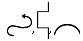
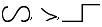
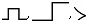
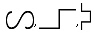
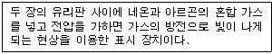
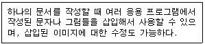
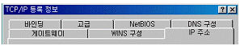
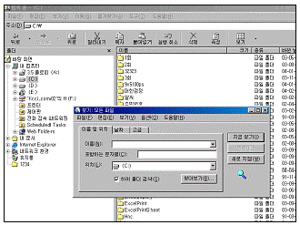
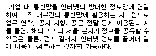
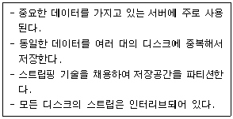

워드프로세서-(구-1급) (2004-05-30 기출문제)
1과목: 워드프로세싱 일반
1. 다음 중 KS X 1001 완성형 한글 코드에 대한 설명으로 옳지 않은 것은?
- 완성된 각각의 문자에 코드 값을 기억시켜 한글을 표현한다.
- 국제 규격을 따랐기 때문에 정보 교환시 제어 문자와 충돌이 발생하지 않는다.
- 자음, 모음, 받침만 기억하므로 조합형에 비해 용량을 적게 차지한다.
- 코드 값이 부여된 완성형 글자 외에는 사용할 수 없다.
(정답률: 72%)

2. 다음 중 문자 사이의 간격을 조정하는 기능과 가장 관계가 깊은 것은?
- 커닝(kerning)
- 템플릿(template)
- 워드 랩(word wrap)
- 메일 머지(mail merge)
(정답률: 91%)
3. 다음 중 컴퓨터 등 정보처리 능력을 가진 장치에 의하여 전자적인 이미지 형태로 사용되는 관인을 무엇이라고 하는가?
- 전자문서
- 전자관인
- 전자이미지서명
- 전자이미지관인
(정답률: 87%)
4. 다음 중 표시장치(CRT)에 대한 설명으로 옳지 않은 것은?
- 도트 피치의 값이 크면 클수록 화면은 선명하다.
- 화소(Pixel)의 수가 많으면 많을수록 해상도가 높다.
- 표시장치의 화면 크기는 대각선의 길이로 나타낸다.
- 화면 주사율이 낮으면 화면 떨림 현상이 발생하여 눈에 피로감을 줄 수 있다.
(정답률: 71%)
5. 다음 중 글꼴(Font)의 구성 방식에 대한 설명으로 옳지 않은 것은?
- 포스트스크립트(Postscript) : 글자의 외곽선 정보를 각종 그래픽 소프트웨어에 제공하며, 위지윅을 지원할 수 있다.
- 비트맵(Bitmap) : 위지윅은 물론 각종 그래픽 프로그램의 문자에 다양한 효과를 주며 확대시 가장 매끄러운 글꼴이다.
- 오픈타입(Opentype) : 외곽선 글꼴 형태로 고도의 압축을 통해 용량을 줄여 통신을 위한 폰트의 전송을 간편하게 할 수 있다.
- 벡터(Vector) : 글자를 선, 곡선으로 처리한 글꼴로 확대시 매끄럽게 표현된다.
(정답률: 86%)
6. 보고기일 후 몇 일이 경과하여도 보고가 도달되지 아니한 때에 제 1차 독촉장을 발부하는가?(2008년도 사무관리규정 개정으로 제외된 문제 입니다. 정답은 4번이었습니다. 4번을 체크하시면 정답 처리 됩니다.)
- 1일
- 2일
- 3일
- 5일
(정답률: 79%)
7. 다음 중 부서별로 소관 업무에 대한 업무계획, 관리업무현황, 기타참고자료 등을 체계적으로 정리하여 활용하는 업무현황철 또는 업무참고철을 무엇이라고 하는가?
- 직무편람
- 기구편람
- 행정편람
- 업무배분 편람
(정답률: 77%)
8. 다음 중 매크로(Macro)에 대한 설명으로 옳지 않은 것은?
- 사용자가 입력하는 순서를 기록해 두었다가 단축키 조작으로 재생 가능하다.
- 반복적인 작업을 빠르고 효율적으로 할 수 있다.
- 매크로는 별도의 파일로 저장할 수 없다.
- 특정 문구의 반복이 가능하기 때문에 복사 및 붙이기 등을 대체하여 사용할 수 있다.
(정답률: 85%)
9. 다음 중 메일머지(Mail Merge) 기능에 대한 설명으로 옳지 않은 것은?
- 이름이나 직책, 주소 등만 다르고 나머지 내용은 같은 여러 통의 편지를 쉽게 만들 수 있는 기능이다.
- 초청장이나 안내장, 청첩장 등을 만들 경우에 효과적으로 이용할 수 있다.
- 본문(내용문) 파일과 데이터 파일을 작성한다.
- 반드시, 데이터 파일에서 메일머지 기능을 실행시켜야 한다.
(정답률: 84%)
10. 다음 중 워드프로세서의 인쇄기능에 대한 설명으로 옳은 것은?
- 기본 프린터의 드라이버는 수정할 수 있으나 새로 등록할 수는 없다.
- 팩스 모뎀을 설치하면, 상대방의 팩시밀리로 모사전송을 할 수 있다.
- 문자의 크기를 나타내는 단위는 픽셀(Pixel)이며, 전각문자는 가로 폭과 세로 높이의 비율이 1:1이다.
- 낱장 인쇄 용지의 A판과 B판의 가로:세로의 비율은 1:2이다.
(정답률: 59%)
11. 다음 중 워드프로세서의 기능에 대한 설명으로 옳지 않은 것은?
- 문서 편집 시 행의 처음이나 끝에 특정 문자가 올 수 없도록 하는 것을 금칙처리라고 한다.
- 수정 전 파일과 수정 후 파일을 동시에 저장할 수 있다.
- 복사, 붙여넣기, 이동, 삭제를 위하여 반드시 영역지정이 필요하다.
- 영역으로 지정한 부분만을 별도로 저장할 수 있다.
(정답률: 75%)
12. 다음 중 문서 저장시 파일의 확장자(Extension)를 지정하는 방법에 대한 설명으로 옳지 않은 것은?
- 문서 파일의 확장자는 길게 지정할 수 있으므로 문서의 내용이 무엇인지를 알 수 있도록 자세히 지정하는게 좋다.
- 일반적으로 *.bak 파일은 문서가 변경되어 저장되는 경우 그 이전의 문서의 내용을 저장하는 백업 파일이다.
- 문서 작성 프로그램에 따라 기본적으로 저장되는 확장자는 정해지지만, 사용자가 다른 형식으로 확장자를 바꾸어 저장할 수 있다.
- 특정 워드프로세서에서 작성한 문서 파일의 확장자를 다르게 바꾸더라도 다음에 그 워드프로세서에서 파일을 읽을 수 있다.
(정답률: 64%)
13. 다음 중 워드프로세서의 기능에 대한 설명으로 옳지 않은 것은?
- 스풀링(Spooling)은 인쇄를 하면서 동시에 다른 문서 작성이나 편집을 할 수 있도록 하는 기능이다.
- 줄의 끝에 있는 영어 단어가 다음 줄까지 연결될 때 단어를 자르지 않고 단어를 다음 줄의 처음으로 옮겨주는 기능을 센터링(Centering)이라고 한다.
- 정렬(Sort)기능을 이용하여‘가, 나, 다, 라, ...순으로 정렬하는 것을 오름차순 정렬이라 한다.
- 네트워크를 이용하여 필요한 문서를 상대방에게 분배, 전송하는 기능을 문서 공유 기능이라고 한다.
(정답률: 80%)
14. 다음 중 캐시메모리(Cache Memory)에 대한 설명으로 옳지 않은 것은?
- 중앙처리장치와 주기억장치 사이에서 실행속도를 높이기 위해 사용되는 기억장치이다.
- 접근속도가 빠르나 값이 비싼 단점이 있다.
- 주로 SRAM을 사용한다.
- 저장된 내용을 읽을 수는 있으나 변경할 수 없다.
(정답률: 78%)
15. 다음 중에서 서로 상반되는 의미를 갖는 교정부호로 짝지어지지 않은 것은?


(정답률: 85%)
16. 다음과 같이 문장이 수정 되었을 때 사용된 교정부호를 순서대로 올바르게 나열한 것은?




(정답률: 87%)
17. 다음 보기에서 설명하고 있는 표시 장치는 무엇인가?

- 전계 방출형 디스플레이(FED : Field Emission Display)
- 플라즈마 디스플레이(PDP : Plasma Display Panel)
- 액정 디스플레이(LCD : Liquid Crystal Display)
- 음극선관(CRT : Cathode Ray Tube Display)
(정답률: 86%)
18. 다음 중 인쇄용지에 대한 설명으로 옳은 것은?
- 낱장 용지의 가로:세로의 비율은 모두 루트 2 :루트 3 의 비율이다.
- 공문서의 표준 규격은 B4(257㎜×364㎜)이다.
- 연속 용지는 한 행에 인쇄할 수 있는 문자의 수에 따라 A판과 B판 용지로 구분된다.
- 낱장 용지의 규격은 전지의 종류와 전지를 분할한 횟수를 사용하여 표시한다.
(정답률: 77%)
19. 다음 중 마우스로 영역(블록)을 지정하는 방법으로 옳지 않은 것은?
- 한 단어 영역 지정 : 해당 단어 앞에서 마우스 포인터를 놓고 세 번 클릭한다.
- 한 줄 영역 지정 : 해당 줄의 왼쪽 끝으로 마우스 포인터를 이동하여 포인터가 화살표로 바뀌면 클릭한다.
- 문단 전체 영역 지정 : 해당 문단의 왼쪽 끝으로 마우스 포인터를 이동하여 포인터가 화살표로 바뀌면 두 번 클릭한다.
- 문서 전체 영역 지정 : 문단의 왼쪽 끝으로 마우스 포인터를 이동하여 포인터가 화살표로 바뀌면 세 번 클릭한다.
(정답률: 81%)
20. 전자출판(Electronic Publishing)에 관한 용어이다. 옳지 않은 것은?
- 디더링(Dithering) : 제한된 색상을 조합 또는 비율을 변화하여 새로운 색을 만드는 작업
- 리딩(Leading) : 자간의 미세 조정으로 특정 문자들의 간격을 조정
- 스프레드(Spread) : 대상체의 컬러가 배경색의 컬러보다 옅어서 대상체가 보이지 않는 현상
- 리터칭(Retouching) : 기존의 이미지를 다른 형태로 새롭게 변형시키는 작업
(정답률: 80%)
2과목: PC 운영 체제
21. 한글 Windows 98에서 인터넷을 사용할 때 문자로된 컴퓨터 주소를 숫자로된 IP 주소로 바꾸어 주는 역할을 하는 것은?
- TCP/IP
- Adapter
- DNS
- Gateway
(정답률: 73%)
22. 다음은 한글 Windows 98에서 지원되는 어떤 기능을 설명한 것인가?

- OLE(Object Linking and Embedding)
- 멀티태스킹(Multi-tasking)
- 자동 감지 설치(Plug and Play)
- 멀티포맷(Multiple Formats)
(정답률: 88%)
23. 한글 Windows 98에서 자주 사용하는 응용 프로그램을 [시작] 메뉴의 상단에 표시하는 적절한 방법은?
- [내 컴퓨터]의 바로 가기 메뉴에서 등록정보를 선택하여 설정한다.
- [탐색기]의 바로 가기 메뉴에서 등록정보를 선택하여 설정한다.
- 바탕 화면의 바로 가기 메뉴에서 등록정보를 선택하여 설정한다.
- [작업 표시줄]의 바로 가기 메뉴에서 등록정보를 선택하여 설정한다.
(정답률: 62%)
24. 한글 Windows 98에서 시동 디스크에 관한 설명으로 옳지 않은 것은?
- Windows 시작에 문제가 있을 때는 시동 디스크로 시스템을 시작할 수 있다.
- 시동디스크를 만들려면 [제어판]의 [프로그램 추가/제거] 등록정보창에서 [Windows 설치] 탭을 선택하여 설정한다.
- 문제 발생에 대비하여 시동 디스크를 만들어 놓는 것이 좋다.
- 시동 디스크를 만들려면 적어도 1.2MB 용량의 플로피 디스크 한 장이 필요하다.
(정답률: 60%)
25. 한글 Windows 98 운영체제의 사용에 관한 설명으로 옳지 않은 것은?
- [제어판]에는 하드웨어의 설정을 위한 프로그램들이 들어있다.
- 프로그램을 실행하면, 프로그램의 아이콘이 작업 표시줄에 생긴다.
- [그림판]은 비트맵 형식의 그림 파일을 만드는 프로그램이다.
- 10MByte 이상의 텍스트 파일도 [메모장]으로 수정할 수 있다.
(정답률: 68%)
26. 한글 Windows 98에서 인터넷을 사용하기 위해 TCP/IP를 수동으로 설정하려고 할 때, 아래의 그림에 나타나있는 탭들 중에서 꼭 설정을 해야하는 것이 아닌 것은?

- 게이트웨이
- WINS 구성
- IP 주소
- DNS 구성
(정답률: 66%)
27. 한글 Windows 98에서 휴지통이나‘C:￦Recycled??폴더에 있는 파일을 복원하려고 한다. 설명으로 옳지 않은 것은?
- 휴지통에 있는 해당 파일을 지정하여 [파일] 메뉴를 선택한 후 [복원]을 선택한다.
- 휴지통에 있는 해당 파일을 지정하여 바로 가기 메뉴에 있는 [복원]을 선택한다.
- 휴지통에 있는 해당 파일을 지정하여 [Ctrl]+[C] 키를 누르고, 목적하는 폴더 창에서 [Ctrl]+[V] 키를 누른다.
- 휴지통에 있는 해당 파일을 지정하여 목적하는 폴더 창으로 드래그 앤 드롭한다.
(정답률: 78%)
28. 한글 Windows 98의 시작 메뉴에서 [찾기] - [파일 또는 폴더]를 차례로 선택하여 파일을 찾는 방법 중 가능하지 않은 것은?
- 특정 기간 동안 변경된 파일을 모두 찾기
- 일정 횟수 이상 변경된 파일을 모두 찾기
- 일정 크기 이상의 파일을 모두 찾기
- 특정 문자열이 내용 중에 포함된 텍스트 파일을 모두 찾기
(정답률: 74%)
29. 한글 Windows 98의 기능 중에서 컴퓨터 찾기에 대한 설명으로 옳은 것은?
- NetBEUI 프로토콜로 연결된 컴퓨터를 찾을 수 있다.
- 네트워크로 연결된 컴퓨터 내의 모든 내용을 볼 수 있다.
- 네트워크 사용자에 대한 정보를 볼 수 있다.
- 현재 사용중인 컴퓨터에 공유 폴더가 있어야만 컴퓨터를 찾을 수 있다.
(정답률: 68%)
30. 한글 Windows 98에서 [제어판]에 있는 [시스템]의 등록정보 창은 다음 중 어느 것과 동일한가?
- 바탕 화면의 등록정보 창
- [내 컴퓨터]의 등록정보 창
- [네트워크]의 등록정보 창
- C: 드라이브의 등록정보 창
(정답률: 65%)
31. 한글 Windows 98의 [그림판] 프로그램에서 선택된 개체에 대한 조작을 하기 위해 사용하는 [이미지] 주메뉴의 하위 메뉴가 아닌 것은?
- 대칭 이동/회전
- 늘리기/기울이기
- 색반전
- 글맵시
(정답률: 77%)
32. 다음 중 한글 Windows 98의 [제어판]에 있는 [키보드]의 등록정보 창에서 설정할 수 있는 옵션이 아닌 것은?
- 필터키 사용 설정
- 키 재입력 시간
- 커서 깜박임 속도
- 설치된 키보드 언어 및 키 배치
(정답률: 69%)
33. 한글 Windows 98의 탐색기를 사용하는 도중에 아래 그림과 같이 파일 또는 폴더의 [찾기] 창을 이용하기 위하여 사용하는 바로 가기 키는?

- [Alt] + [Tab]
- [Ctrl] + [F]
- [Shift] + [F]
- [Alt] + [F]
(정답률: 75%)
34. 한글 Windows 98의 기본 프린터에 대한 설명으로 옳은 것은?
- 한글 Windows 98 설치시에 함께 설치되는 프린터를 의미한다.
- 프린터 추가에 의해 설치된 여러 프린터 중에서 가장 먼저 설치된 프린터를 의미한다.
- 인쇄 명령 수행 시 특정 프린터를 지정하지 않을 경우 자동으로 인쇄작업이 전달되는 프린터를 의미한다.
- 기본 프린터로 지정된 프린터는 제거될 수 없다.
(정답률: 54%)
35. 한글 Windows 98의 [시스템 도구] 중에서 [디스크 정리]를 이용하여 할 수 없는 기능은?
- 임시 인터넷 파일의 제거
- 휴지통 비우기
- 다운로드한 프로그램 파일의 제거
- Windows 시스템 파일의 제거
(정답률: 64%)
36. 한글 Windows 98에서 키보드를 사용할 때 키보드상의 키를 누르고 있으면 같은 글자가 계속 입력된다. 이러한 키의 반복 사용 기능을 무시하거나 반복 입력 속도를 줄이려면 [제어판]-[내게 필요한 옵션] 등록정보 창에서 무엇을 설정해야 하는가?
- 전환키
- 고정키
- 필터키
- 단축키
(정답률: 68%)
37. 한글 Windows 98에서 응용 프로그램들의 수행에 영향을 주는 INI 파일들은 서로 다른 곳에 위치해 있을 수 있다. 이러한 분산된 INI 파일들에 대해 관련 정보들을 관리할 수 있도록 하는 계층적 데이터베이스를 무엇이라고 하는가?
- REGISTRY
- CONFIG.SYS
- AUTOEXEC.BAT
- WIN.INI
(정답률: 70%)
38. 한글 Windows 98에서 바탕 화면의 오른쪽 부분에 액티브 데스크 톱을 적용한 인터넷 채널을 표시하기 위해 설정할 수 있는 프로그램은?
- [제어판] - [인터넷]
- [제어판] - [네트워크 연결]
- [제어판] - [디스플레이]
- [제어판] - [멀티미디어]
(정답률: 58%)
39. 다음 중 패킷 교환 방식에 대한 설명으로 옳지 않은 것은?
- 패킷 교환 방식은 회선 교환 방식에 비해 회선의 점유라는 자원 낭비가 없다.
- 패킷 교환 방식은 회선 교환 방식과 비교할 때 실시간 서비스에 있어서 더 적합하다.
- 패킷이 목적지에 도달할 수 있도록 경로 배정(Routing)이 필요하다.
- 패킷의 흐름을 제어할 수 있는 트래픽 제어(Traffic Control) 기술이 필요하다.
(정답률: 51%)
40. 한글 Windows 98이 설치된 컴퓨터를 부팅할 때, ROM BIOS에 있는 검사 프로그램에 의해 시스템의 하드웨어를 자동으로 검사하는 기능은?
- OnNow 기능
- MTU 설정 기능
- POST 기능
- Back Up 기능
(정답률: 64%)
3과목: 컴퓨터 및 정보활용
41. 컴퓨터 시스템의 보안 예방책을 침입하여 시스템에 무단 접근하기 위해 사용되는 일종의 비상구를 무엇이라고 하는가?
- 클리퍼 칩
- 백 도어
- 부인봉쇄
- 스트리핑
(정답률: 79%)
42. 다음 중 그래픽 파일 형식에 대한 설명으로 옳지 않은 것은?
- GIF 형식은 Animation을 표현할 수 있다.
- JPG 형식은 GIF 형식보다 다양한 색상을 나타낼 수 있다.
- JPG 형식은 인터넷 상에서 그림을 전송할 때 많이 사용된다.
- GIF 형식은 24bit 트루 컬러(True Color)로 표현할 수 있다.
(정답률: 58%)
43. 다음 중 산술 및 논리 연산의 결과를 일시적으로 기억하고 있는 것은?
- 명령 레지스터
- 프로그램 카운터
- 인덱스 레지스터
- 누산기
(정답률: 78%)
44. 한 글자를 저장하는데 1 byte, 한 페이지에 2,000글자가 있고, 책 한권이 500 페이지라면 1GB의 기억장치는 대략 몇권의 책의 내용을 저장할 수 있는가?
- 100권
- 500권
- 1,000권
- 2,000권
(정답률: 74%)
45. 다음 용어 중에서 하드웨어나 소프트웨어의 성능을 검사하기 위해 실제로 사용되는 조건에서 처리 능력을 테스트하는 것을 무엇이라고 하는가?
- 버그 테스트
- 베타 테스트
- 메모리 테스트
- 벤치마크 테스트
(정답률: 73%)
46. 네트워크 발달로 나타난 바이러스 형태로 메일에 바이러스 코드를 삽입하기도 하고, 주소록에 등록된 사람들에게 자동으로 메일을 보내기 때문에 확산 속도가 매우 높은 바이러스를 무엇이라 하는가?
- 파일 감염
- 트로이 목마
- 웜(Worm)
- 매크로
(정답률: 69%)
47. 현재 사용하고 있는 하드디스크의 용량이 부족하여, 새로운 하드디스크를 하나 더 구입하여 설치하였으나 인식이 되지 않음을 발견하였다. 다음 중 이에 대한 점검사항으로 가장 적절하지 않은 것은?
- 디스크 Cable들이 올바르게 접속되어 있는지를 점검한다.
- CMOS Setup에서 하드디스크 설정을 점검한다.
- 하드디스크의 점퍼 스위치가 제대로 되어 있는지 점검한다.
- 이미 설치되어 있는 하드디스크가 제대로 분할(Partition)이 되어 있는지 점검한다.
(정답률: 67%)
48. 다음 중 스캐너에 대한 설명으로 틀린 것은?
- 운영 체제가 관리하므로 스캐닝 프로그램은 필요 없다.
- 드라이버가 있어야 한다.
- 해상도와 속도는 스캐너 성능의 척도가 된다.
- 스캐너를 사용하기 위해서는 인터페이스를 고려해야 한다.
(정답률: 71%)
49. 다음 중 웹을 통해 전송되는 대부분의 그림이 JPG나 GIF 형식인 이유로 옳은 것은?
- 웹 브라우저가 JPG나 GIF 그림 형식만을 지원하기 때문이다.
- 원본과 차이가 없는 화질 때문이다.
- 압축 형식이어서 전송속도가 빠르기 때문이다.
- 모니터로 표현할 수 있는 색상 수와 동일한 색상 수를 갖는 그림 형식이기 때문이다.
(정답률: 56%)
50. 다음 중 데이터베이스 관리 시스템의 기능으로 옳지 않은 것은?
- 데이터의 독립성 유지
- 데이터의 공유
- 다수 사용자의 동시실행제어(Concurrency Control)
- 데이터의 고립
(정답률: 74%)
51. 다음 중 업무처리의 신뢰도를 높이기 위하여 2대의 컴퓨터를 설치하는 시스템으로 2개의 CPU가 같은 업무를 동시에 처리하며 그 결과를 상호 점검하면서 운영하다가, 만일에 한쪽 컴퓨터가 정지하면 다른 컴퓨터가 계속해서 처리하여 업무가 중단되는 것을 방지하는 시스템은?
- 다중 처리 시스템(Multi-processing System)
- 듀얼 시스템(Dual System)
- 분산 처리 시스템(Distributed System)
- 듀플렉스 시스템(Duplex System)
(정답률: 69%)
52. 다음은 어느 통신망에 대한 설명인가?

- Arpanet
- Externet
- Intranet
- Internet
(정답률: 76%)
53. 다음 중 RISC 프로세서의 특징으로 옳은 것은?
- 복잡하고 기능이 많은 명령어로 구성
- 많은 수의 레지스터 사용
- 복잡한 주소 지정 방식 채택
- 다양한 크기(Size)의 명령어 집합 사용
(정답률: 68%)
54. 최근 일반 가정에서 인터넷으로 널리 사용하는 ADSL에 대한 설명으로 옳은 것은?
- 동축 케이블을 사용하여 고속의 데이터 통신을 제공한다.
- 대칭형 디지털 가입자 회선이다.
- 영상 회의, 원격 진료 등과 같은 양방향 서비스에 가장 적합한 방식이다.
- 전화는 낮은 주파수를, 데이터 통신은 높은 주파수를 이용한다.
(정답률: 75%)
55. 다음 중 데이터의 전송과정에서 발생하는 오류를 검사하기 위해 사용되는 여분의 비트를 무엇이라고 하는가?
- 정지 비트(Stop Bit)
- 패리티 비트(Parity Bit)
- 데이터 비트(Data Bit)
- 복사 비트(Copy Bit)
(정답률: 80%)
56. 컴퓨터가 등장하면서 많은 사람들은 인간의 지능과 유사한 프로그램, 즉 인공지능(Artificial Intelligence)을 탑재한 컴퓨터가 대두될 것으로 예견하였다. 최초로 인공지능이라는 용어를 사용한 사람은?
- 매카시(J. MaCarthy)
- 크레이(S. Cray)
- 노이스(R. Noyce)
- 핸콕(T. H. Hancock)
(정답률: 62%)
57. 다음 중 광케이블에 대한 설명으로 옳지 않은 것은?
- 다른 유선 전송매체에 비하여 대역폭이 넓고 데이터 전송률이 뛰어나다.
- 크기가 작으며 가볍다.
- 정보전달의 안정성이 낮다.
- 신호를 재생해주는 역할을 하는 리피터의 설치 간격이 크다.
(정답률: 77%)
58. 인가된 사용자 혹은 외부의 침입자에 의해 컴퓨터 시스템의 허가되지 않은 사용이나 오용 또는 악용과 같은 침입을 알아내기 위한 시스템을 무엇이라고 하는가?
- 침입 탐지 시스템 (Intrusion Detection System)
- 전자 인증 시스템 (Electronic Authentication System)
- 암호화 시스템 (Encryption System)
- 방화벽 시스템 (Firewall System)
(정답률: 62%)
59. 다음은 무엇에 대한 설명인가?

- DVD
- RAID
- Juke Box
- Jaz Drive
(정답률: 75%)
60. 다음 중 하이퍼텍스트에 관한 설명으로 적절하지 못한 것은?
- 편집자의 의도보다는 독자의 의도에 따라 문서를 읽는 순서가 결정되도록 구성한 문서를 의미한다.
- 문서와 문서를 연결하여 관련된 정보를 쉽게 찾아볼 수 있도록 그물처럼 연결된 비선형 구조를 갖는 문서이다.
- 하이퍼텍스트에서 가장 중요한 요소는 하이퍼링크이다.
- 멀티미디어로만 작성된 정보 묶음들이 서로 링크된 형태이다.
(정답률: 57%)
KS X 1001 완성형 한글 코드는 자음, 모음, 받침을 조합하여 완성된 각각의 문자에 코드 값을 부여하여 한글을 표현한다. 이 코드는 국제 규격을 따르기 때문에 정보 교환시 제어 문자와 충돌이 발생하지 않는다. 또한 자음, 모음, 받침만 기억하므로 조합형에 비해 용량을 적게 차지한다.